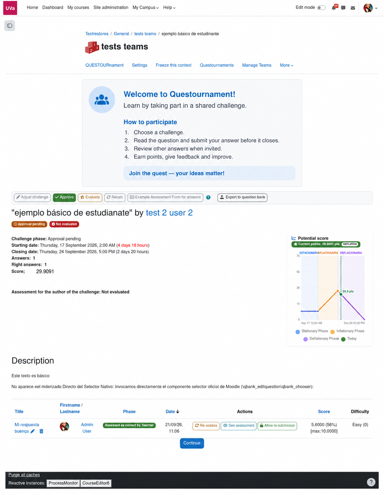

Frame
Name the quest and write the context learners need to make a good first move.
Start from a learning goal, shape a challenge arena and give the group a fair, legible way to contribute. The defaults are enough for a first run.
Add Questournament to a course topic as you would any Moodle activity. Give it a name, a story and a timebox. The activity can remain simple while your facilitation grows.

Name the quest and write the context learners need to make a good first move.
Choose dates, response limits, points and whether individuals or teams participate.
Decide if learners can propose challenges and become part of the content team.
A good evaluation guide is short, concrete and shared before the first answer. Use criteria that describe what “useful”, “clear” or “convincing” looks like in your discipline.

Model the kind of answer you want to receive. A teacher-authored challenge creates a safe starting point; later rounds can be authored by learners.

See the learner and teacher journey screen by screen.